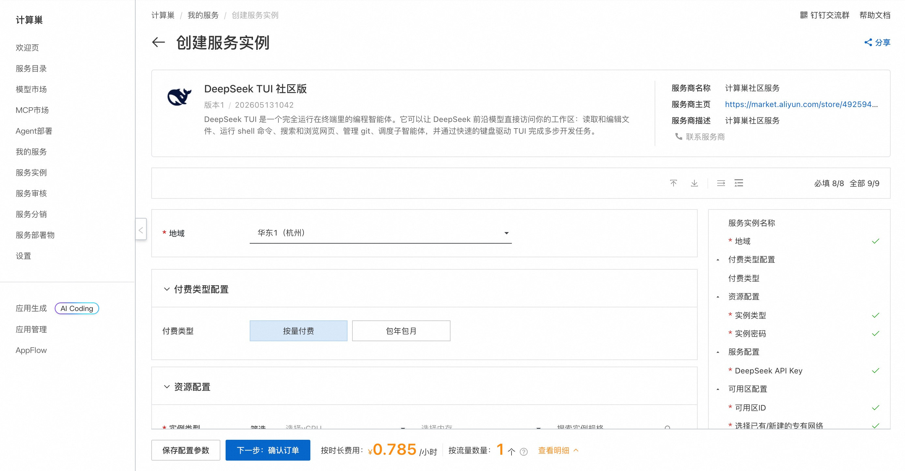
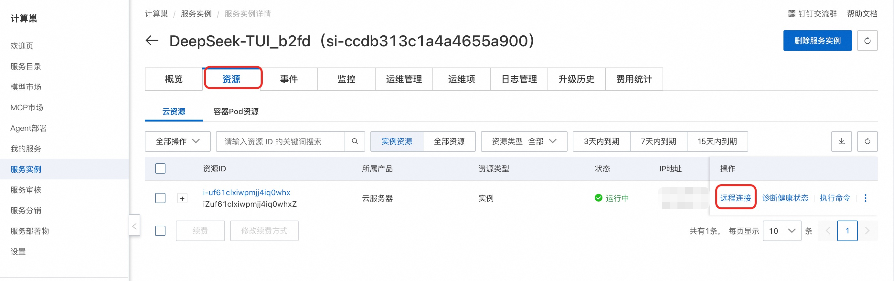
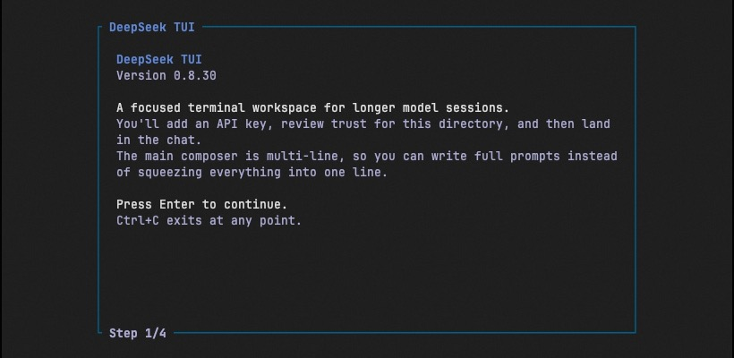
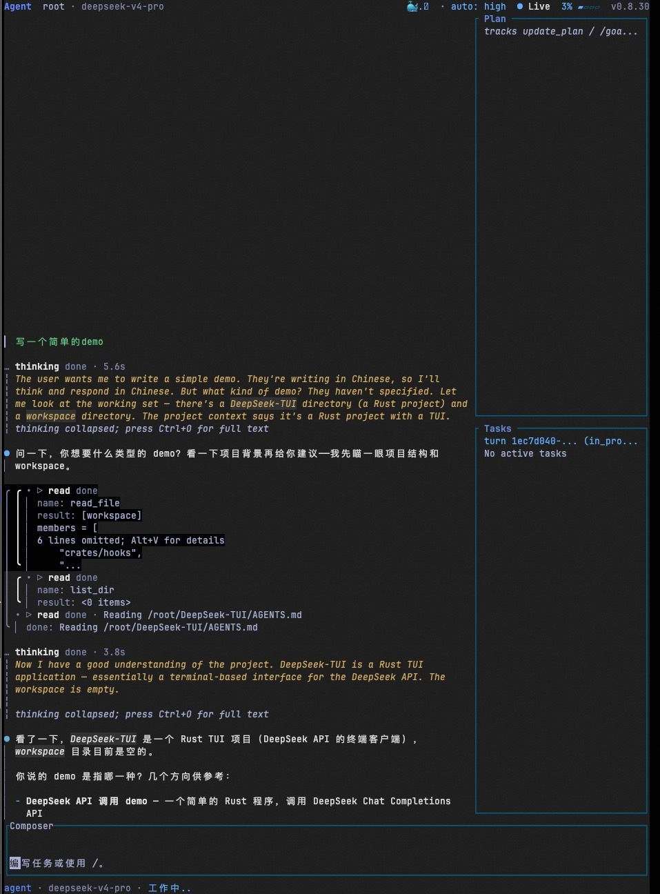

DeepSeek TUI简介
DeepSeek TUI 是一个运行在终端中的 AI 编程智能体（Coding Agent），基于 DeepSeek V4 大模型构建。它可以读取和编辑文件、执行 Shell 命令、搜索网页、管理 Git 仓库，并从键盘驱动的 TUI 界面协调子代理完成复杂编程任务。
核心特性
- Auto 模式 — 自动选择模型和推理级别（deepseek-v4-flash / deepseek-v4-pro）
- 思维链流式输出 — 实时查看 DeepSeek 推理过程
- 完整工具套件 — 文件操作、Shell 执行、Git 管理、Web 搜索/浏览、补丁应用、子代理、MCP 服务器
- 1M token 上下文 — 上下文追踪、手动或配置压缩、前缀缓存遥测
- 三种工作模式 — Plan（只读探索）、Agent（交互式审批）、YOLO（自动批准）
- 会话保存/恢复 — 检查点和恢复长时间运行的会话
- 工作区回滚 — 通过 side-git 实现每轮快照和 /restore 回滚
- LSP 诊断 — 每次编辑后通过 rust-analyzer、pyright 等提供内联错误/警告
部署流程
-
单击部署链接，进入服务实例部署界面，根据界面提示填写参数，可以看到对应询价明细，确认参数后点击下一步：确认订单。

-
确认订单完成后同意服务协议并点击立即创建。
-
等待部署完成后远程连接服务器。

-
连接后执行以下命令命令启动 TUI 界面：
shell sudo su root cd /root tmux deepseek-tui
-
进入 TUI 界面后，可以直接输入编程任务：

使用指南
请查看官方文档
使用须知
- 本工具为第三方开源项目，阿里云仅提供云资源和部署入口支持，不对工具自身功能、生成内容、执行结果、服务可用性及额外费用承担责任。
© 2009-2022 Aliyun.com 版权所有